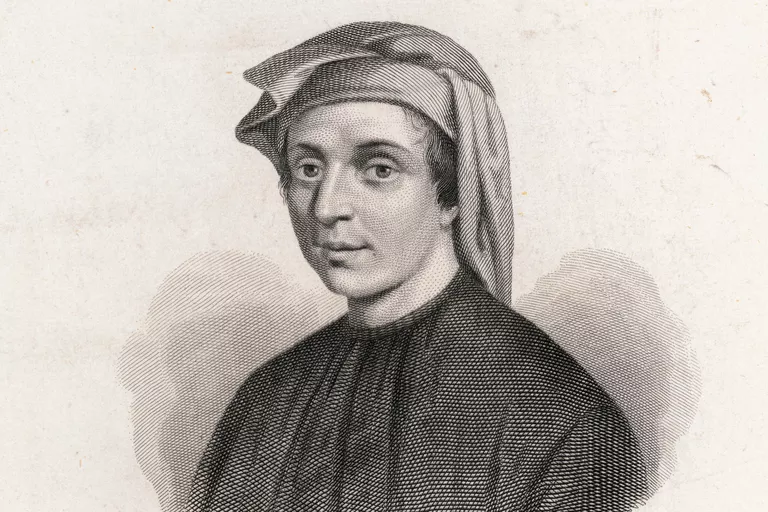

Leonardo Fibonacci
Leonardo Pisano, bolj znan pod vzdevkom Fibonacci (ime izpeljano iz Filius Bonacci, sin Bonaccia), se je rodil v Pisi v Italiji okrog leta 1170 (letnice v različnih virih se razlikujejo). Ker je njegov oče služboval v različnih krajih sveta kot carinik, je Leonardo skupaj s svojim očetom veliko potoval. Fibonacci se je trudil naučiti čim več matematike, ki bi mu lahko kot trgovcu in pisarju koristila. Z Dvajsetimi leti je odpotoval v Alžirijo ter nato nadaljeval potovanje po južni Afriki, kjer se je učil matematike od nekega arabskega učenjaka. Na svojih potovanjih je študiral indijske števke, arabske računske metode in različne številske sisteme.
Svoje znanje iz potovanj je leta 1202 (1228) združil v delu Liber abac, (Knjiga o abaku ali Knjiga o računanju), ki je tudi njegovo najpomembnejše delo. Original se ni ohranil, poznamo samo kasnejše predelave. V knjigi je zapisal indoarabski desetiški sistem, decimalno vejico, simbol za ničlo (ki ga prej v Evropi še niso poznali), okrajšal je ulomke, na koncu knjige pa je navedel reševanje enačb z uporabo spremenljivk in tudi korenjenje. Našel je približek števila π z napako manjšo od stotine odstotka. Na pobudo cesarja Friedrcha II., katerega je prav tako zanimala matematika in naravoslovje, je Fibonacci napisal knjigo Liber quadratorum (Popolni kvadrat). Napisal pa je še knjigi Practica Geometrae (Praktična geometrija), v kateri opisuje spoznanja in izreke, izpeljane iz Evklidovih del, in Flos (Cvet), V kateri piše o razvedrilni matematiki, teoriji števil, algeberskih problemih, zemljemerstvu. Ker še niso poznali tiska se je na žalost njegovo znanje skupaj z znanjem marsikaterega znanstvenika potekalo zelo počasi.